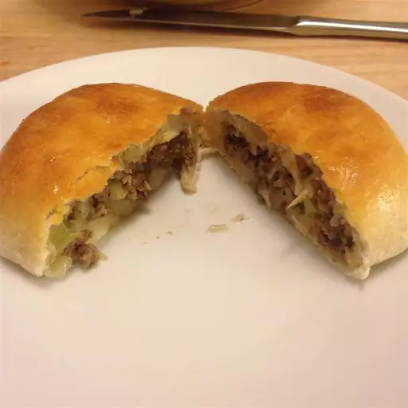

Cabbage Burgers

This is a recipe created by Russian German immigrants.
It is very popular in the Nebraska, South Dakota region where
I am from. Cabbage and ground beef are encased in a neat
little bread package.
Ingredients
- 3 (1 pound) loaves frozen bread dough, thawed
- 5 pounds ground beef
- ¼ cup water
- 1 large head cabbage, chopped
- 1 large onion, chopped
- 2 cloves garlic, chopped
- salt and freshly ground black pepper to taste
- 2 tablespoons butter, melted
Directions
- Preheat the oven to 375 degrees F (190 degrees C).
Divide each loaf of frozen bread dough into 6 pieces,
and roll into balls. Set aside.
- Crumble the ground beef into a large pot over medium
heat. Cook and stir until evenly browned. Drain off
grease. Add the water, cabbage, onion, and garlic.
Cook over medium-low heat, stirring as needed, until
the cabbage is soft. Season with salt and pepper to
taste. I like to use more pepper than salt. Drain off
any excess liquids, and set aside.
- On a lightly floured surface, roll the dough balls
into 5 inch (approximate) squares. Place about 3/4
cup of the cabbage burger into the center, fold the
dough over, and pinch to seal. Place on a baking
sheet with the seam side down.
- Bake for 15 to 18 minutes in the preheated oven, or
until golden brown. Remove from the oven, and brush
with melted butter. Serve hot.